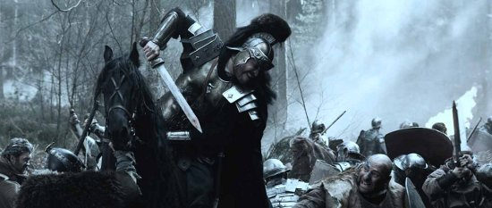

Sep 20, 2010 · 2 minute read · Comments
Games development

El V Concurso Universitario de Software Libre abre sus puertas y como no podía ser menos IberOgre y Sion Tower ya están inscritos en él. A pesar de que Sion Tower sea un videojuego, el proyecto se encuentra bajo la categoría “Educación” por estar dirigido al aprendizaje de desarrollo de videojuegos en 3D con Ogre. En la fecha de redacción de este artículo no hay muchos proyectos registrado aunque seguro que la lista crecerá hasta alcanzar un buen número. Sigue leyendo si te interesa conocer las novedades del proyecto y la nueva forja.
El año pasado participé en el IV CUSL con Air Force Pilot, un pequeño juego de aviones en 2D con vista cenital. Lo hice sin ningún tipo de ambición, simplemente a modo de experimento, para aprender e imponerme cierta continuidad en su desarrollo. La experiencia que me llevé fue absolutamente positiva ya que conocí decenas de proyectos interesantes y viví el buen ambiente de la lista de correo. ¡Lo más inesperado fue quedar finalista en la fase local de Cádiz! Estoy convencido de que este año también disfrutaré del concurso, esta vez con mi PFC, lo que me permitirá dedicarle más tiempo.
Hasta el momento para el control de versiones he utilizado Git, no obstante, el CUSL obliga a utilizar la forja en RedIris (la cual cuenta únicamente con SVN). Sé que es posible mantener un SVN a partir de una rama de un repositorio Git utilizando la herramienta git SVN aunque tengo entendido que puede dar problemas. Bajo la premisa “keep it simple” me decanto por el SVN de RedIris, más adelante trataré de solucionar este problema.
Para seguir el desarrollo de IberOgre y Sion Tower pueden ser útiles los siguientes enlaces:
Espero que el proyecto crezca con ayuda del concurso y les deseo muchísima suerte al resto de participantes.
Sep 18, 2010 · 3 minute read · Comments
Hobbies

Tras haber terminado la miniserie de Los Pilares de la Tierra mi compañero Poorpooland me comentó que había oído hablar bien de Luther, una serie inglesa, de la BBC. El hecho de que contará solamente con 6 capítulos en su primera temporada prometía un visionado liviano y rápido así que la devoré en apenas unos cuantos días. Les adelanto que me ha gustado bastante a pesar de la división de opiniones que produjo en el momento de su emisión, a continuación mi humilde valoración.
El detective inspector jefe (DCI) John Luther tiene una mente privilegiada, es capaz de calar a los sospechosos antes de disponer todas las pruebas. Esta perspicacia le llevará a actuar sobre la línea que separa el protocolo de lo ilegal. A grandes rasgos podríamos asegurar que es una especie de House metido a detective aunque también podríamos compararlo con Sherlock Holmes o Colombo. Tanto su carácter temperamental como sus problemas conyugales o traumas pasados interferirán más de una vez en su trabajo. La fuerte personalidad de su protagonista y el fuerte componente psicológico son los rasgos más reseñables de la serie.
De las primeras cosas que me sorprendieron de la serie fue la estructura de sus episodios, normalmente o se sigue una trama continua o son piezas autoconcluyentes. En este caso hay un poco de todo, puede que en un episodio atrapen al criminal aunque también es posible que dicha línea argumental continúe posteriormente. Esto confunde al espectador en el mejor de los sentidos, en otras producciones como House sabes que un problema acabará (bien o mal), pero en Luther existe una mayor incertidumbre, todo un acierto.

Se le ha achacado mucho lo arquetípico de su protagonista, un tipo serio, introvertido, desvivido por su trabajo, malhumorado, perspicaz, arriesgado, etc. Parece que lo han sacado de un molde, llevan toda la razón. No obstante, Idris Elba, el actor que lo interpreta hace un estupendo trabajo, dota de gran fuerza al personaje y compensa las críticas. Supongo que recordarán a Idris Elba por magnífico trabajo que hizo encarnando a Russel Stringer Bell en The Wire.
El ritmo que consigue Luther es sorprendente: la intensidad, el peligro y los giros de guión son constantes. Se decanta por el arriesgado enfoque de mostrar quien es el enemigo y dejar el misterio en cómo lo atraparán (o no). Para ello las trampas y el juego psicológico están a la orden del día. Es evidente que si te gustan las tramas policíacas debes darle una oportunidad sobre todo por su corta duración.
Sopesando sus fallos y virtudes, Luther sale bastante bien parada, por tanto les recomiendo un visionado máxime si no disponen de excedentes de tiempo para una producción de mayor duración. Por supuesto, siempre en versión original ya que disfrutarán del particular acento inglés que siempre me llama la atención, “fellas”.
Sep 12, 2010 · 2 minute read · Comments
Hobbies

Hace bastante tiempo tuve la ocasión de leer el best-seller por antonomasia de Ken Follet “Los Pilares de la Tierra”. Un libro extenso que, lejos de ser una obra maestra, te conduce en un fantástico viaje por la Inglaterra del S.XII y los inicios de la arquitectura gótica en Europa utilizando el desarrollo de sus personajes como medio de transporte. Desconocía que se estaba rodando una miniserie basada en la novela y me he lanzado a verla durante los últimos días, a continuación unas breves impresiones.
No me gustaría entretenerme en exponer mi opinión de la obra completa, sino de la miniserie como adaptación del original. Por supuesto, el texto está libre de spoilers. Ocho episodios de una hora aproximadamente que se antojan insuficientes componen el resumen del mastodóntico libro. El texto de Follet se recrea en los espléndidos avances arquitectónicos mostrándonos su belleza y majestuosidad. Por otro lado, esta adaptación toma la guerra de sucesión inglesa así como el entramado de odio, venganza y amor entre los personajes como eje principal. Un cambio de prioridades que deja cojo al conjunto aunque permite que conectemos más con los personajes.

Si obviamos el cambio de enfoque encontraremos una versión televisiva más que digna. Esta historia llena de detalles demuestra hasta dónde puede llegar la ambición humana, ya saben, aquello de “el fin justifica los medios”. Monjes corruptos, nobles crueles pero supersticiosos, una corona en juego, el resurgir de las cenizas de Kingsbridge y la construcción de una catedral gótica nos mantendrán suficientemente entretenidos.
Los sibaritas de la pequeña pantalla deben estar avisados, no es una producción sobresaliente aunque merece una oportunidad, máxime si se sabe disfrutar de una historia de estas características. Si bien las licencias que se toman los productores de la serie son abundantes las considero comprensibles al tratarse de medios notablemente distintos. Sé que las puntuaciones en webs especializadas de poco sirven, pero para que se hagan una idea les diré que tiene un 8.8 en IMDB. En España se estrena el martes, emitiéndose los episodios en packs dobles. En cualquier caso, siempre recomiendo el visionado en versión original (curioso el marcado acento inglés).
Sep 11, 2010 · 2 minute read · Comments
Games development

Tras algunas semanas sin anunciar ninguna novedad en IberOgre traigo buenas noticias. Para empezar, he eliminado parte de la incertidumbre inicial y planificado los próximos artículos. Además, mi compañero, Alberto Cejas, va a comenzar a colaborar en la wiki. Sé que las palabras no valen por sí solas y por ello ya está publicado un nuevo artículo en la wiki de Ogre3D en español: “Manejo básico de OIS” catalogado en la sección “Otras tecnologías”.
OIS (Object Oriented Input System) es una biblioteca multiplataforma (Windows, GNU/Linux y Mac) open source (licencia zlib/libpng) para la gestión de eventos y dispositivos de entrada. Ogre3D no es un motor de videojuegos en 3D, simplemente es un engine de renderizado por lo que componentes como sonido, red y entrada no están incluidos. Es perfectamente válido utilizar el subsistema de entrada de SDL para capturar eventos pero OIS es la librería más extendida en la comunidad de Ogre.
Entre las características de OIS destaca la orientación a objetos (¡qué sorpresa!) y la inclusión de listeners. Utilizando el patrón de diseño “Observador” ya implementado podemos crear clases capaces de ser notificadas de cambios en el estado interno del ratón, teclado o cualquier joystick conectado al equipo. Da resultados bastante buenos pero la documentación oficial es prácticamente inexistente. No existe una documentación oficial, únicamente podemos acceder al html generado por Doxygen de las clases si lo generamos nosotros mismos a partir del código. Por si fuera poco, muchas de los métodos no están completamente explicados y muchas secciones son confusas. Afortunadamente, en la wiki oficial de Ogre3D encontramos un pequeño tutorial (en inglés, obviamente).
En IberOgre se utilizará OIS como librería para capturar eventos del usuario por lo que era necesario incluir un tutorial al respecto. Creo que cubre un vacío hasta ahora complicado de salvar (aprender con escasa documentación nunca es agradable). El artículo está publicado aunque en proceso de corregir pequeños errores, si alguien detecta algún problema le agradecería que diera la voz de alarma.
Espero que os sea útil.
Sep 4, 2010 · 3 minute read · Comments
Hobbies
Las mejores películas son las que provocan que el espectador se implique, se interese y se identifique con los personajes. Es muy complicado, por no decir imposible, generar cierta tensión en una escena si te importa un bledo lo que le ocurra al protagonista. Una pena que hubieran retirado de cartelera Los Mercenarios ya que tuve que asistir a la proyección de Centurión, un perfecto ejemplo de fracaso en llegar al público. Sinceramente, no sé en qué estaba pensando Neil Marshal, director y guionista del largometraje, mientras trabajaba en ella. No se preocupen, no pienso despotricar en una enumeración sin sentido, sigan leyendo y expondré mis razones.
El Imperio Romano trata de conquistar Britania pero una tribu se les resiste, los Pictos (anda, esto parece la historia de Asterix y Obélix). Estos “bárbaros” arrastran a los romanos a una guerra de guerrillas en los que legiones completas caen en emboscadas y asaltos. La novena legión cae y con ella el general Titus Flavius Virilus (Dominic West). Los únicos supervivientes son un grupo reducido de soldados entre los que se encuentra el insulso centurión Quintus Dias (Michael Fassbender). En su viaje de vuelta a casa sufrirán el acoso de una partida de pictos que les dará caza.
La acción y el gore hipervitaminados están a la orden del día, no es raro ver trozos de cráneo saltar por los aires cuando un soldado estampa a un bárbaro contra un árbol. Los hachazos, las flechas y las espadas se clavan en la carne provocando que personajes principales o secundarios mueran sin que nos afecte lo más mínimo. Se los quita de escena antes de que podamos conocer su historia, su causa y que podamos sentir cierto apego por ellos. El ejemplo más evidente es su protagonista, un personaje extremadamente plano del que nada se sabe. Es un espectáculo sanguinario sin sentido en el que es complicado evitar la risa ante tal despropósito. He visto películas cutres de este estilo pero no tratan patéticamente de alcanzar un nivel de epicidad como el de Gladiator.

¿Qué más se puede añadir después del párrafo anterior? Cambiando de tema, me ha sorprendido negativamente que Dominic West (Jimmy McNulty en The Wire) se rebaje a una producción de este calibre. No obstante, West es el único que podría salvarse del resto de actores los cuales se han visto en la necesidad de soltar penosas perlas escritas por el guionista sin demasiado sentido.
Por supuesto, me veo en la necesidad moral de desaconsejar su visionado a cualquiera que tenga en estima su integridad mental. Para cubrir ese lapso de tiempo les recomendaría darle una oportunidad a series como Spartacus o Rome. Cualquier capítulo de ambas juega en otra división lo que hace más triste como producciones de calidad son canceladas mientras Centurión campa a sus anchas en salas de todo el mundo.